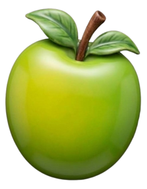
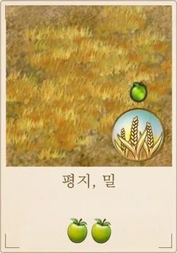
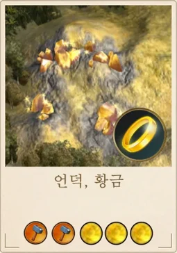

BOARD GAME RULEBOOK
문명 보드게임 규칙서
땅을 넓히고, 기술을 쌓고, 불가사의를 세워 제국을 번영시키세요


2~5인 · 문명 24개 · 타일 160장
처음이라면 1~3장을 먼저 읽고 바로 한 판을 시작하세요. 나머지는 필요할 때 찾아 읽으면 됩니다.
각자 한 문명을 맡아 땅을 넓히고, 기술·불가사의·군대로 문명을 키웁니다.
| 구성물 | 설명 |
|---|---|
| 문명 카드 24장 | 내가 맡을 문명: 우선도, 시작 행복, 차례당 보너스, 능력, 고유 유닛이 적혀 있음 |
| 타일 카드 160장 | 영토가 되는 땅. 일꾼을 올려 생산함 |
| 과학 카드 | 연구할 기술. 게임을 진행시킴 |
| 불가사의 카드 | 서로 경쟁하여 짓는 건축물 |
| 정책 카드 | 일회성 혹은 지속성 효과를 줌 |
| 군사 카드 | 사용하여 전쟁 |
| 토큰 | 일꾼, 위대한 장군, 망치, 진척도, 도시 |
문화 = 내 타일 수입니다.
식량·망치·과학·금은 모아둘 수 없습니다. 쓰지 않으면 차례 끝에 사라집니다.
망치는 군사 카드와 불가사의에만 씁니다.
일꾼 수는 행복을 넘을 수 없습니다 (5장).
모두 문명 카드 1장과 일꾼 1개를 받고, 타일 4장으로 첫 도시를 세우며 시작합니다.
가운데: 도시 토큰을 올린 타일
세 면: 나머지 타일 3장
남은 한 면: 처음 얻는 문화 타일 자리
처음 얻는 문화 타일은 남은 한 면에 붙입니다. 이 십자 모양 5장이 첫 5타일입니다 (일부 불가사의 조건에 쓰임).
문명 카드의 보너스(식량·망치·과학·금)는 매 차례 받습니다.
시작 패가 나쁘면 첫 차례에 도시를 세우지 않고, 타일을 2장까지 버리고 버린 수만큼 새로 뽑을 수 있습니다. 그 차례는 쉬고 다음 차례에 도시를 세웁니다.
우선도가 높은 문명부터 한 명씩 차례를 하고, 모두 끝나면 라운드 정산을 합니다.

산출 계산타일은 카드 아래쪽에 그려진 만큼 차례마다 식량·망치·금을 만듭니다.


아래 자원은 기술을 연구하면 산출이 늘어납니다.
| 자원 | 기술 | 추가 산출 |
|---|---|---|
| 밀, 바나나, 사슴 | 농업 | 식량 +1 (다음 차례부터) |
| 소, 양 | 목축업 | 망치 +1 |
| 물고기 | 광학 | 망치 +1 |
| 석탄 | 산업화 | 망치 +2 |
| 석유 | 생물학 | 망치 +4 |
| 알루미늄 | 전기 | 식량 +3 (다음 차례부터) |
| 우라늄 | 원자론 | 망치 +6 |
카드에 금 3이 그려진 자원이 사치자원입니다. 특정 기술을 연구하면 종류마다 행복 +1입니다 (같은 종류를 여러 장 가져도 +1). 행복을 주는 기술은 아래 표에서 찾을 수 있습니다.
| 기술 | 사치자원 |
|---|---|
| 광업 | 황금, 소금, 보석 |
| 항해 | 진주, 게, 고래 |
| 역법 | 향, 코코아, 설탕 |
| 수렵 | 상아, 모피 |
| 석공술 | 대리석 |
| 청동기술 | 구리 |
일꾼은 식량으로 늘어나고, 행복이 그 상한을 정합니다.
내정 마지막에, 연구에 쓰고 남은 식량을 일꾼 수와 비교합니다.
| 남은 식량 | 결과 |
|---|---|
| 일꾼 수보다 적음 | 일꾼 1개를 잃습니다 |
| 일꾼 수 이상, 일꾼 수 × 2 미만 | 그대로 유지합니다 |
| 일꾼 수 × 2 이상 | 일꾼 1개를 얻습니다 (행복 한도까지) |
한 차례에 잃는 일꾼은 최대 1개입니다.